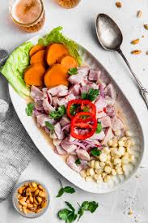

Ceviche Peruano

Description
En Perú, el cebiche o ceviche es considerado como parte de la identidad nacional. Es un plato de amplio consumo en toda la costa peruana y además venerado como elemento central de la gastronomía nacional, al punto de haber sido declarado formalmente como Patrimonio Cultural de la Nación y catalogado como el plato más representativo de Perú.4 Su historia se remonta a épocas precolombinas. Al igual que en otros países, el plato es servido en un tipo de restaurante conocido como cebichería.
De acuerdo a un estudio del Banco Interamericano de Desarrollo (BID) sobre innovación en la gastronomía peruana (2022), el cebiche es un ejemplo del impacto sobre la gastronomía de la cultura y de la diversidad poblacional a lo largo de su territorio —en la que se conjugan pescadores, agricultores y cocineros. El cebiche es uno de los platos más emblemáticos de la cocina peruana. Existe una gran diversidad de cebiches entre las diferentes regiones costeras del Perú y, dentro de las mismas regiones, entre las diferentes playas y caletas de pescadores. En su libro Cebiche Power, Gastón Acurio documenta los distintos matices a través del recorrido por la ruta del ceviche desde Tumbes hasta Tacna. Esta gran diversidad ha motivado a distintos cocineros y maestros cebicheros a crear nuevos tipos de cebiches.
Ingredients
- 2 sweet potatoes
- 1 red onion, cut into thin strips
- 1 cup fresh lime juice
- ½ stalk celery, sliced
- ¼ cup lightly packed cilantro leaves
- 1 pinch ground cumin
- 1 clove garlic, minced
- 1 habanero pepper, seeded and minced
- Salt and freshly ground pepper to taste
- 1 pound fresh tilapia, cut into 1/2-inch pieces
- 1 pound medium shrimp - peeled, deveined, and cut into 1/2-inch pieces
- 1 bibb or Boston lettuce, separated into leaves
Steps
- Place the potatoes and sweet potatoes in a saucepan and cover with water. Simmer until the potatoes are easily pierced with a fork, then drain, and set aside to cool to room temperature. Place the sliced onion in a bowl of warm water, let stand 10 minutes, then drain and set aside.
- Meanwhile, place the lime juice, celery, cilantro, and cumin into the bowl of a blender, and puree until smooth. Pour this mixture into a large glass bowl, and stir in the garlic and habanero pepper. Season with salt and pepper, then stir in the diced tilapia and shrimp.
- Set aside to marinate for an hour, stirring occasionally. The seafood is done once it turns firm and opaque.
- To serve, peel the potatoes and cut into slices. Stir the onions into the fish mixture. Line serving bowls with lettuce leaves. Spoon the ceviche with its juice into the bowls and garnish with slices of potato.